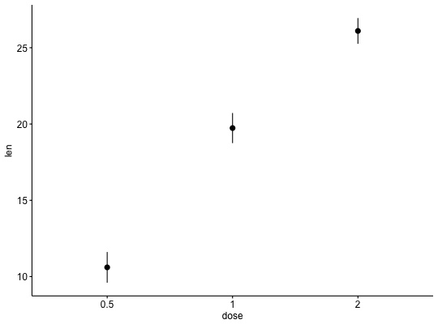
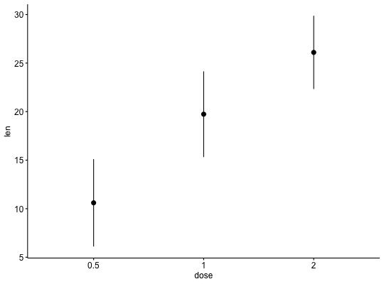
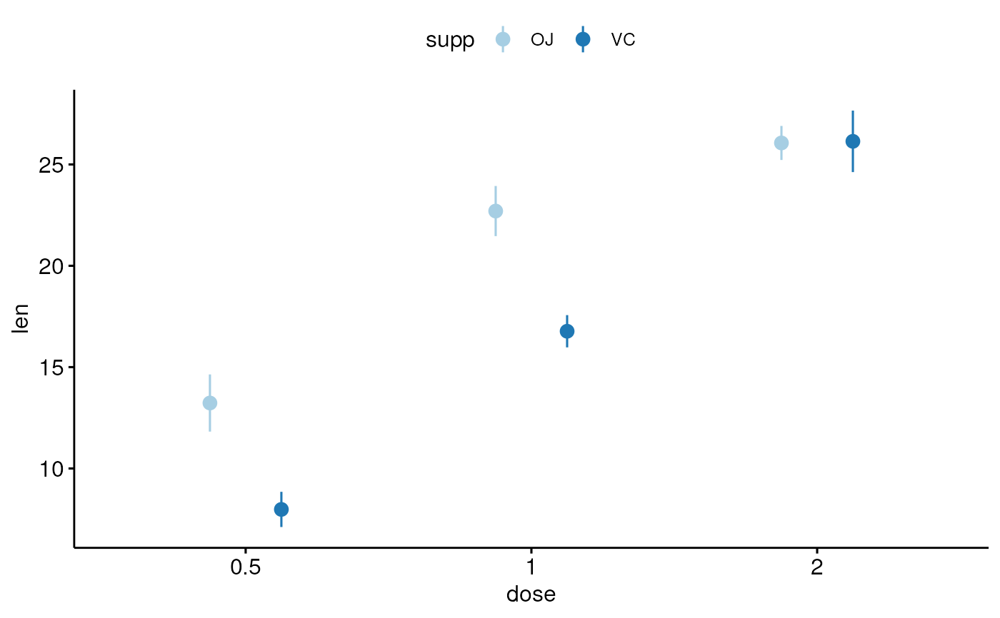
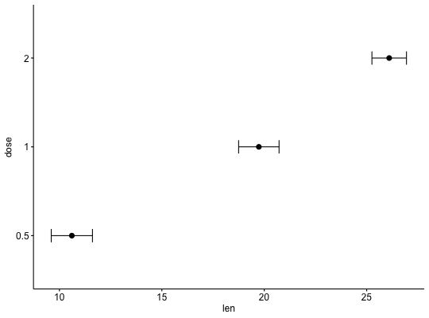
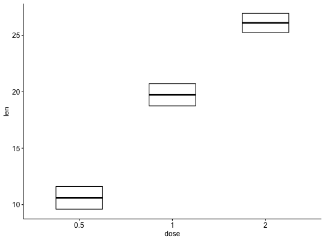
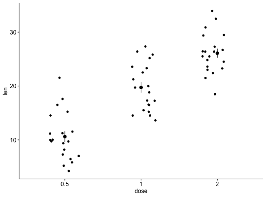
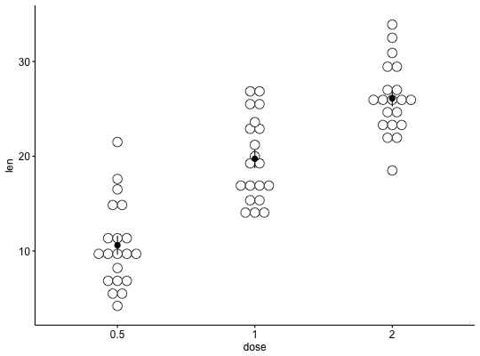
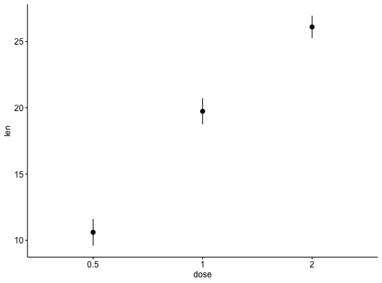

Visualizing error.
ggerrorplot(data, x, y, desc_stat = "mean_se", combine = FALSE,
merge = FALSE, color = "black", fill = "white", palette = NULL,
size = NULL, width = NULL, title = NULL, xlab = NULL, ylab = NULL,
facet.by = NULL, panel.labs = NULL, short.panel.labs = TRUE,
select = NULL, remove = NULL, order = NULL, add = "none",
add.params = list(), error.plot = "pointrange", ci = 0.95,
position = position_dodge(), ggtheme = theme_pubr(), ...)
Arguments
- data
- a data frame
- x, y
- x and y variables for drawing.
- desc_stat
- descriptive statistics to be used for visualizing errors. Default value is "mean_se".
Allowed values are one of , "mean", "mean_se", "mean_sd", "mean_ci", "mean_range",
"median", "median_iqr", "median_mad", "median_range"; see
desc_statby for more details.
- combine
- logical value. Default is FALSE. Used only when y is a vector
containing multiple variables to plot. If TRUE, create a multi-panel plot by
combining the plot of y variables.
- merge
- logical or character value. Default is FALSE. Used only when y is
a vector containing multiple variables to plot. If TRUE, merge multiple y
variables in the same plotting area. Allowed values include also "asis"
(TRUE) and "flip". If merge = "flip", then y variables are used as x tick
labels and the x variable is used as grouping variable.
- color, fill
- outline and fill colors.
- palette
- the color palette to be used for coloring or filling by groups.
Allowed values include "grey" for grey color palettes; brewer palettes e.g.
"RdBu", "Blues", ...; or custom color palette e.g. c("blue", "red"); and
scientific journal palettes from ggsci R package, e.g.: "npg", "aaas",
"lancet", "jco", "ucscgb", "uchicago", "simpsons" and "rickandmorty".
- size
- Numeric value (e.g.: size = 1). change the size of points and
outlines.
- width
- numeric value between 0 and 1 specifying box width.
- title
- plot main title.
- xlab
- character vector specifying x axis labels. Use xlab = FALSE to
hide xlab.
- ylab
- character vector specifying y axis labels. Use ylab = FALSE to
hide ylab.
- facet.by
- character vector, of length 1 or 2, specifying grouping
variables for faceting the plot into multiple panels. Should be in the data.
- panel.labs
- a list of one or two character vectors to modify facet panel
labels. For example, panel.labs = list(sex = c("Male", "Female")) specifies
the labels for the "sex" variable. For two grouping variables, you can use
for example panel.labs = list(sex = c("Male", "Female"), rx = c("Obs",
"Lev", "Lev2") ).
- short.panel.labs
- logical value. Default is TRUE. If TRUE, create short
labels for panels by omitting variable names; in other words panels will be
labelled only by variable grouping levels.
- select
- character vector specifying which items to display.
- remove
- character vector specifying which items to remove from the plot.
- order
- character vector specifying the order of items.
- add
- character vector for adding another plot element (e.g.: dot plot or
error bars). Allowed values are one or the combination of: "none",
"dotplot", "jitter", "boxplot", "point", "mean", "mean_se", "mean_sd",
"mean_ci", "mean_range", "median", "median_iqr", "median_mad",
"median_range"; see ?desc_statby for more details.
- add.params
- parameters (color, shape, size, fill, linetype) for the
argument 'add'; e.g.: add.params = list(color = "red").
- error.plot
- plot type used to visualize error. Allowed values are one of
c("pointrange", "linerange", "crossbar", "errorbar", "upper_errorbar",
"lower_errorbar", "upper_pointrange", "lower_pointrange", "upper_linerange",
"lower_linerange"). Default value is "pointrange" or "errorbar". Used only
when add != "none" and add contains one "mean_*" or "med_*" where "*" = sd,
se, ....
- ci
- the percent range of the confidence interval (default is 0.95).
- position
- Position adjustment, either as a string, or the result of
a call to a position adjustment function.
- ggtheme
- function, ggplot2 theme name. Default value is theme_pubr().
Allowed values include ggplot2 official themes: theme_gray(), theme_bw(),
theme_minimal(), theme_classic(), theme_void(), ....
- ...
- other arguments to be passed to be passed to ggpar().
Details
The plot can be easily customized using the function ggpar(). Read
?ggpar for changing:
- main title and axis labels: main,
xlab, ylab
- axis limits: xlim, ylim (e.g.: ylim = c(0, 30))
- axis
scales: xscale, yscale (e.g.: yscale = "log2")
- color palettes:
palette = "Dark2" or palette = c("gray", "blue", "red")
- legend title,
labels and position: legend = "right"
- plot orientation : orientation
= c("vertical", "horizontal", "reverse")
See also
ggpar, ggline
Examples
# Data: ToothGrowth data set we'll be used.
df<- ToothGrowth
head(df, 10)
#> len supp dose
#> 1 4.2 VC 0.5
#> 2 11.5 VC 0.5
#> 3 7.3 VC 0.5
#> 4 5.8 VC 0.5
#> 5 6.4 VC 0.5
#> 6 10.0 VC 0.5
#> 7 11.2 VC 0.5
#> 8 11.2 VC 0.5
#> 9 5.2 VC 0.5
#> 10 7.0 VC 0.5
# Plot mean_se
ggerrorplot(df, x = "dose", y = "len")

# Change desc_stat to mean_sd
# (other values include: mean_sd, mean_ci, median_iqr, ....)
# Add labels
ggerrorplot(df, x = "dose", y = "len",
desc_stat = "mean_sd")

# Change error.plot to "errorbar" and add mean point
# Visualize the mean of each group
ggerrorplot(df, x = "dose", y = "len",
add = "mean", error.plot = "errorbar")

# Horizontal plot
ggerrorplot(df, x = "dose", y = "len",
add = "mean", error.plot = "errorbar",
orientation = "horizontal")

# Change error.plot to "crossbar"
ggerrorplot(df, x = "dose", y = "len",
error.plot = "crossbar", width = 0.5)

# Add jitter points and errors (mean_se)
ggerrorplot(df, x = "dose", y = "len",
add = "jitter")

# Add dot and errors (mean_se)
ggerrorplot(df, x = "dose", y = "len",
add = "dotplot")
#> `stat_bindot()` using `bins = 30`. Pick better value with `binwidth`.

# Multiple groups with error bars and jitter point
ggerrorplot(df, x = "dose", y = "len",
color = "supp", palette = "Paired",
error.plot = "pointrange",
position = position_dodge(0.5))
